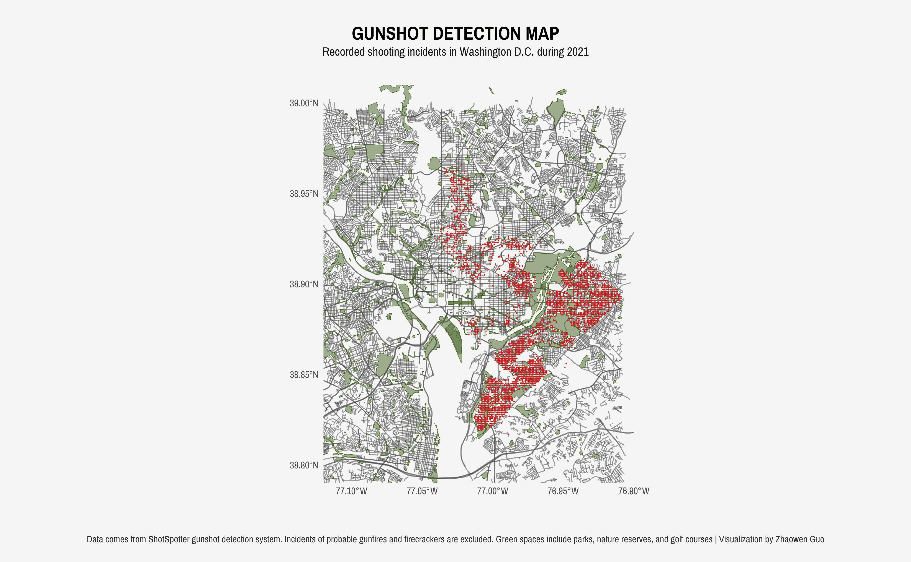

OpenStreetMap (OSM) is an open-source mapping platform that provides detailed maps of the world. It is built and maintained by a global community of volunteers who contribute data, such as roads, buildings, and points of interest, to create a free and open map of the world.
OSM offers a comprehensive API that enables users to easily access and use the map data seamlessly in their own applications. Previously, I relied on the OpenLayers plugin in QGIS to access OSM data. While QGIS provides a nice graphical user interface for loading and visualizing OSM data, I had to switch between R and QGIS to ensure consistency in the resulting graphs. Here comes the good news! Now we can directly access OSM from R using the osmdata package. By specifying the coordinates or the name of the geographic area of interest, we can easily obtain OSM data and perform analyses in R.
Continuing on my previous articles about green spaces, in this blog post I will introduce how to map green spaces using OSM. Check out my full code here.
Data Collection
Once we have installed the osmdata package, we can begin gathering our data. The first step is to define a specific area of interest using coordinates or place names. For example, to download all OSM data for Washington DC, we can try either of the following approaches to specify the bounding box:
```{r}
# first approach
opq(getbb("Washington, District of Columbia"))
# second approach
opq(bbox = c(-77.10, 38.80, 76.90, 39.00))
```Depending on how we define green spaces, we can use add_osm_feature() to set specific key and value attributes and call osmdata_sf() to convert the output to a simple features (sf) object which will simplify the plotting process later. The same approach can be used to display other map elements, such as streets and rivers. The following code will extract the previously obtained OSM data that matches the defined attribute tags.
```{r}
# green spaces defined as parks, nature reserve, and golf course
greens <- opq(getbb("Washington, District of Columbia")) %>%
add_osm_feature(key = "leisure",
value = c("park", "nature_reserve", "golf_course")) %>%
osmdata_sf()
# green spaces defined as grass
greens <- opq(getbb("Washington, District of Columbia")) %>%
add_osm_feature(key = "landuse",
value = "grass") %>%
osmdata_sf()
```Data Visualization
With our data now downloaded, we can begin visualizing it using ggplot2. To visualize spatial data, we simply add a layer by geom_sf(). We can include an argument inherit.aes = FALSE to customize each layer, making its aesthetics (i.e. color, size) not inherit from previous layers.
```{r}
ggplot() +
geom_sf(data = greens$osm_polygons, inherit.aes = FALSE, colour = "#47632a", fill = "#47632a", alpha = .5, size = 1)
```We can also set the coordinate reference system (CRS) for the spatial data being plotted using coord_sf(). By default, the CRS is set to WGS 84 (EPSG code 4326), which I used in this example, and You can adjust it as needed. We can also specify the longitude and latitude in the same layer to “zoom in” the area of interest.
```{r}
ggplot() +
geom_sf(data = greens$osm_polygons, inherit.aes = FALSE, colour = "#47632a", fill = "#47632a", alpha = .5, size = 1) +
coord_sf(crs = st_crs(4326), xlim = c(-77.12, -76.90), ylim = c(38.79, 39.01))
```We can also add additional layers to enrich our spatial visualization by displaying other types of geographic data, such as point locations. For example, in this illustration, I incorporated a geom_point() layer highlighting the locations of 2021 gunshot incidents.
```{r}
ggplot() +
geom_sf(data = greens$osm_polygons, inherit.aes = FALSE, colour = "#47632a", fill = "#47632a", alpha = .5, size = 1) +
geom_point(data = gunshot, aes(x = LONGITUDE, y = LATITUDE), color = "#c62320", size = 0.1, inherit.aes = FALSE) +
coord_sf(crs = st_crs(4326), xlim = c(-77.12, -76.90), ylim = c(38.79, 39.01))
```Just with a few additional aesthetic touches, I was able to create a plot that effectively visualizes both green spaces in the DC area and the recorded gunshot incidents that occurred in 2021.
